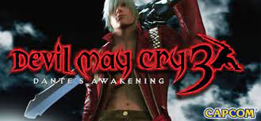

La historia sirve como precuela del primer Devil May Cry, Dante es un joven arrogante y compulsivo, que se ve envuelto en una misión de derrotar a su hermano gemelo Vergil, que planea abrir las puertas del infierno para obtener el poder de su padre Sparda. Devil May Cry 3 fue criticado por su extrema dificultad, al igual que el videojuego original. El juego tuvo una edición especial titulada Devil May Cry 3: Special Edition, en el año 2006; en esta versión el jugador podía desbloquear a Vergil como un personaje jugable, También se agregan nuevos niveles de dificultad. En 2005 en Japón se publicó un manga precuela al videojuego.
